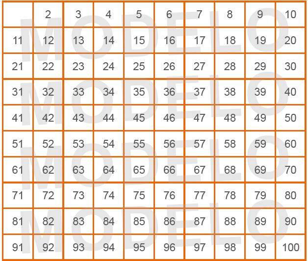
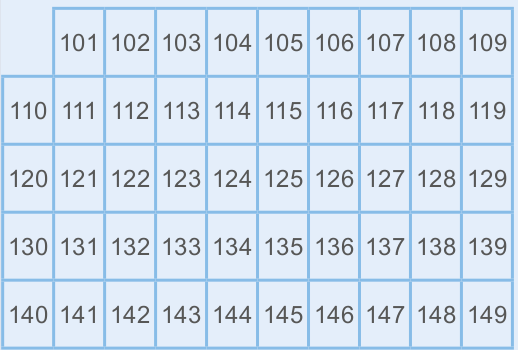
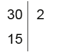
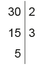

Neste capítulo, apresentamos o Crivo de Eratóstenes para descobrir os números até 100 que são primos. Leia a seguir um trecho do livro Introdução à história da Matemática, de Howard Eves, que nos conta um pouco da história desse matemático.
Natural de Cirene, na costa sul do mar Mediterrâneo, Eratóstenes era apenas uns poucos anos mais novo que Arquimedes. Passou grande parte de sua vida em Ate- nas e, quando tinha cerca de qua- renta anos de idade, foi convidado por Ptolomeu III do Egito a mudar- -se para Alexandria e ser tutor de seu filho e bibliotecário-chefe da Universidade local. Há relatos de que, por volta de 194 a.C., já com idade avançada, uma oftalmia o deixou quase cego. Desgostoso resolveu suicidar-se, deixando vo- luntariamente de se alimentar.
Eratóstenes foi singularmente talen- toso em todos os ramos do conhe- cimento do seu tempo. Distinguiu- -se como matemático, astrônomo, geógrafo, historiador, filósofo, poeta e atleta. Consta que os alunos da Universidade de Alexandria costu- mavam chamá-lo de Pentatblus, o que significa campeão em cinco esportes atléticos. Era também conhecido como Beta e a respeito dessa alcunha aventaram-se algu- mas hipóteses. Alguns acreditam que, devido ao seu saber amplo e brilhante, era alçado à condição de um segundo Platão. Uma explica- ção menos abonadora propõe que, não obstante fosse ele talentoso em muitos campos, nunca conseguiu ser o primeiro de seu tempo em campo nenhum; em outras pala- vras, era sempre o segundo. Cada uma dessas explicações se enfra- quece um pouco quando se toma conhecimento de que um certo as- trônomo de nome Apolônio (muito provavelmente Apolônio de Perga) era chamado de Epsilon. Devido a isso o historiador James Gow sugeriu talvez Beta e Epsilon sim- plesmente indicassem os números gregos (2 e 5) de certos gabinetes ou salas de leitura da Universidade, associados de alguma maneira par- ticular aos dois homens. Ptolomeu Hefesto, por outro lado, defende que alcunha de Apolônio decorria do fato de que ele estudava a Lua cujo símbolo era a letra Ɛ.
EVES, Howard. Introdução à história da Matemática. Campinas: Editora da Unicamp, 2002. p. 196-197.
CAPÍTULO 2 - Números primos e números compostos
Conceito de números primos
Observe a sequência dos divisores dos números a seguir.
6: 1, 2, 3, 6
11: 1, 11
16: 1, 2, 4, 8, 16
23: 1, 23
Você percebeu que os números 11 e 23 apresentam somente dois divisores, o número 1 e o próprio número? Nesse caso, eles são denominados de números primos.
Número primo é todo número natural que apresenta apenas dois divisores: o 1 e ele mesmo.
Os números que não são primos, ou seja, aqueles maiores do que 1 e que têm mais de dois divisores, são denominados números compostos.

1. Vamos descobrir quais são os números primos menores que 100? Para isso, podemos utilizar o processo denominado Crivo de Eratóstenes, de-senvolvido pelo matemático grego Eratóstenes há mais de 2 000 anos.
Primeiro, em dupla, construam no caderno, um quadro com todos os números naturais de 2 até 100, como no modelo a seguir.
144
Encontre soluções
Atividade 5
Números primos: 101, 103, 107, 109, 113, 127, 131, 137, 139, 149.
Em seguida, risquem os números que são:
► múltiplos de 2, exceto o próprio 2; 4, 6, 8, 10, 12, 14, 16, 18, 20, 22, 24, 26, 28, 30, 32, 34, 36, 38, 40, 42, 44, 46, 48, 50, 52, 54, 56, 58, 60, 62, 64, 66, 68, 70, 72, 74, 76, 78, 80, 82, 84, 86, 88, 90, 92, 94, 96, 98 e 100.
► múltiplos de 3, exceto o próprio 3; 9, 15, 21, 27, 33, 39, 45, 51, 57, 63, 69, 75, 81, 87, 93 e 99.
► múltiplos de 5, exceto o próprio 5; 25, 35, 55, 65, 85 e 95.
► múltiplos de 7, exceto o próprio 7. 49 e 77.
► continuamos esse processo para os números que não foram riscados, até que não haja mais números a serem riscados ou contornados. 2, 3, 5, 7, 11, 13, 17, 19, 23, 29, 31, 37, 41, 43, 47, 53, 59, 61, 67, 71, 73, 79, 83, 89 e 97.
a) Que números vocês não riscaram?
Verifique junto com seus colegas e com o professor os números que foram riscados e os números que não foram riscados.
Os números que você encontrou são os números primos menores que 100.
Atenção!
► O número 1 não é primo nem composto, pois tem apenas um divisor, o próprio 1.
► O número 2 é o único número primo par.
ENCONTRE SOLUÇÕES
1. Classifique os números naturais a seguir em primos ou compostos.
a) 21 Composto
b) 23 Primo
c) 41 Primo
d) 63 Composto
e) 39 Composto
f) 89 Primo
2. Quais são os números primos compreendidos entre 50 e 60? 53 e 59.
3. Responda à questão no caderno: 8 números: 2, 3, 5, 7, 11, 13, 17 e 19.
4. Podemos escrever alguns números naturais considerando-os como um produto de números primos. Observe:
6 = 2 ∙ 3
► Em seu caderno, escreva cada número a seguir, considerando-o como um produto de dois ou mais números primos.
a) 15 3 ∙ 5
b) 21 3 ∙ 7
c) 30 2 ∙ 3 ∙ 5
d) 42 2 ∙ 3 ∙ 7
5. Faça o Crivo de Eratóstenes, em seu caderno, utilizando números de 101 a 149. Depois, encontre os números primos compreendidos entre 100 e 150. Risque os números que são:
a) múltiplos de 2;
b) múltiplos de 3;
c) múltiplos de 5;
d) múltiplos de 7;
e) múltiplos de 11.
101, 103, 107, 109, 113, 127, 131, 137, 139, 149145
Decomposição em fatores primos
Vamos escrever o número 24 considerando-o como o produto de dois ou mais fatores, ou seja, a multiplicação de dois ou mais números naturais.
24 = 2 ∙ 12
24 = 4 ∙ 6
24 = 3 ∙ 8
24 = 2 ∙ 2 ∙ 6
24 = 2 ∙ 2 ∙ 2 ∙ 3
Comparando todos os produtos, podemos observar que, em um deles, todos os fatores são números primos.
24 = 2 ∙ 2 ∙ 2 ∙ 3
Nesse caso, temos a decomposição do número 24 em fatores primos. Neste produto, dizemos que 2 e 3 são fatores de 24.
Todo número natural, desde que seja maior que 1 e não seja um número primo, pode ser decomposto em fatores primos. Chamamos esse processo de fatoração completa.
Exemplos:
► 32 = 2 ∙ 2 ∙ 2 ∙ 2 ∙ 2 = 25
► 51 = 3 ∙ 17
► 42 = 2 ∙ 3 ∙ 7
► 72 = 2 ∙ 2 ∙ 2 ∙ 3 ∙ 3 = 23 ∙ 32
A forma fatorada completa de um número natural pode ser obtida por meio de um processo de divisões sucessivas.
Primeiro, verificamos se o número 30 é divisível pelo menor número primo. Como 30 é divisível por 2, efetuamos a divisão, prestando atenção na posição do 2 e na do 15.
Na sequência, verificamos se 15 ainda é divisível por 2.
Nesse caso, como não é, verificamos se ele é divisível pelo próximo número primo, que é 3, e continuamos a divisão.
146
Encontre soluções
Atividade 2
a)
68 = 2² ∙ 17
b)
75 = 3 ∙ 5²
c)
84 = 2² ∙ 3 ∙ 7
d)
350 = 2 ∙ 5² ∙ 7
e)
51 = 3 ∙ 7
f)
90 = 2 ∙ 3² ∙ 5
g)
104 = 2³ ∙ 13
h)
175 = 5² ∙ 7
Temos que 5 é divisível por 5. Portanto: 30 2
Quando o quociente obtido é igual a 1, finalizamos o processo.
Forma fatorada completa: 30 = 2 ∙ 3 ∙ 5
Exemplos:
Forma fatorada completa: 7 ∙ 7 = 7².
Forma fatorada completa: 2 ∙ 2 ∙ 2 ∙ 2 ∙ 3 ∙ 3 = 24 ∙ 32.
ENCONTRE SOLUÇÕES
1. A seguir, temos a fatoração completa de alguns números naturais. Quais são esses números?
a) 2³ ∙ 3 ∙ 5 120
b) 2² ∙ 3 ∙ 7 84
c) 3² ∙ 5 45
d) 2 ∙ 5 ∙ 11 110
e) 3 ∙ 5² 75
f) 2² ∙ 3² ∙ 7 252
2. Decomponha os números a seguir em fatores primos e registre a forma fatorada completa de cada um deles.
a) 68 2² ∙ 17
b) 75 3 ∙ 5²
c) 84 2² ∙ 3 ∙ 7
d) 350 2 ∙ 5² ∙ 7
e) 51 3 ∙ 17
f) 90 2 ∙ 3² ∙ 5
g) 104 2³ ∙ 13
h) 175 5² ∙ 7
147
Atividade 4
a) 2² ∙ 7 = 28
140 : 28 = 5
b) 3 ∙ 5 = 15
165 : 15 = 11
c) 7 ∙ 13 = 91
819 : 91 = 9 = 3²
d) 5 ∙ 17 = 85
340 : 85 = 4 = 2²
3. Por meio da decomposição em fatores primos, podemos também calcular a raiz quadrada de um número quadrado perfeito. Observe:
√100 = ?
100 = 2 ∙ 2 ∙ 5 ∙ 5
Aplicando a propriedade comutativa, temos:
100 = 2 ∙ 5 ∙ 2 ∙ 5
Em seguida, aplicamos a propriedade associativa:
Em seguida, aplicamos a propriedade associativa:
Ou seja:
100 = 10 ∙ 10 = 10²
Portanto, √100 = 10.
► Agora é a sua vez! Utilizando a decomposição em fatores primos, calcule o valor da raiz quadrada dos números quadrados perfeitos abaixo.
√196 14
√900 30
√625 25
√1764 42
4. Alguns números são apresentados com sua forma fatorada completa. Que fator deve ser colocado no lugar do símbolo ■, para que a igualdade seja verdadeira?
a) 2² ∙ ■ ∙ 7 = 140 5
b) 3 ∙ 5 ∙ ■ = 165 11
c) ■ ∙ 7 ∙ 13 = 819 3²
d) ■ ∙ 5 ∙ 17 = 340 2²
5. Paula e Elaine estão competindo para ver quem resolve mais rapidamente as atividades propostas pelo professor. Em uma atividade, a forma fatorada de um número natural era 23 ∙ 32. Qual das duas acertou? Elaine
6. Observe os números a seguir, decompostos em fatores primos.
A = 2 ∙ 2 ∙ 3 ∙ 3 ∙ 5
B = 2 ∙ 3 ∙ 5 ∙ 7
a) O número A é múltiplo de 9? Por quê? Sim, porque 9 = 3 ∙ 3 é um dos seus fatores.
b) O número B é múltiplo de 21? Por quê? Sim, porque 21 = 3 ∙ 7 é um dos seus fatores.
c) Escreva o número A e B. A = 180 e B = 210.
d) O produto A ∙ B é múltiplo de 8? Por quê? Sim, pois o produto A∙B=2∙2∙3∙3∙5∙2∙3∙5∙7 e 8=2∙2∙2 é um dos fatores.
e) Qual o resultado da divisão do número A por 45? 4
f) Qual o resultado da divisão do número B por 6? 35
148